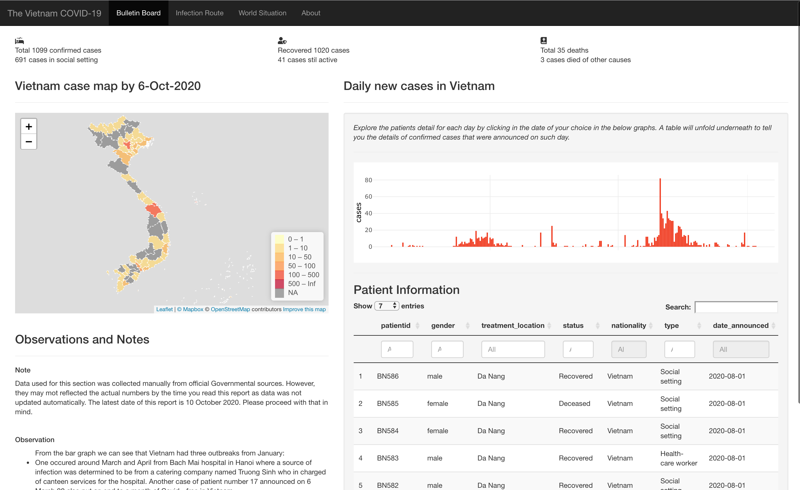
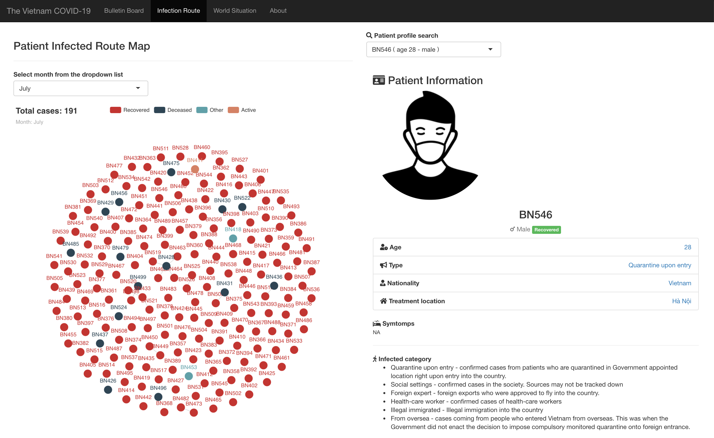
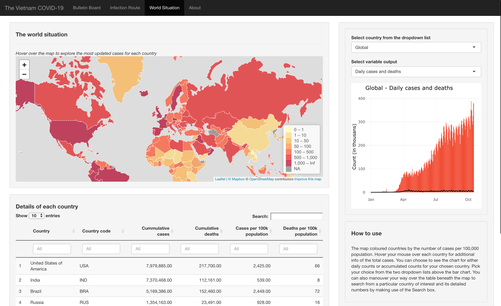
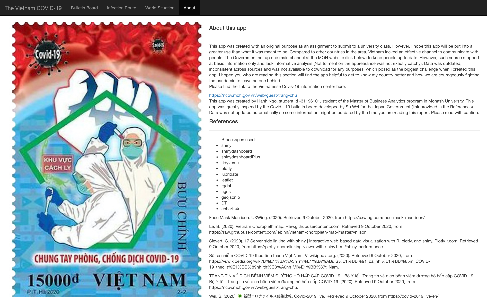
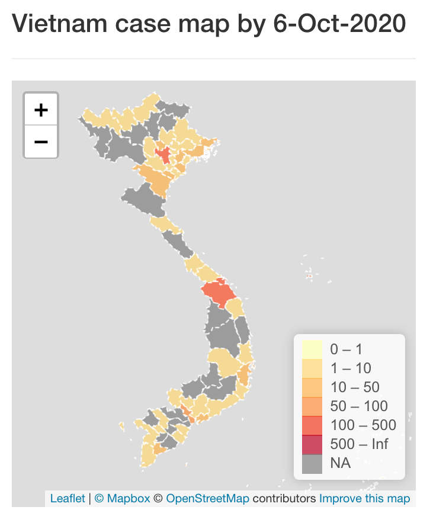
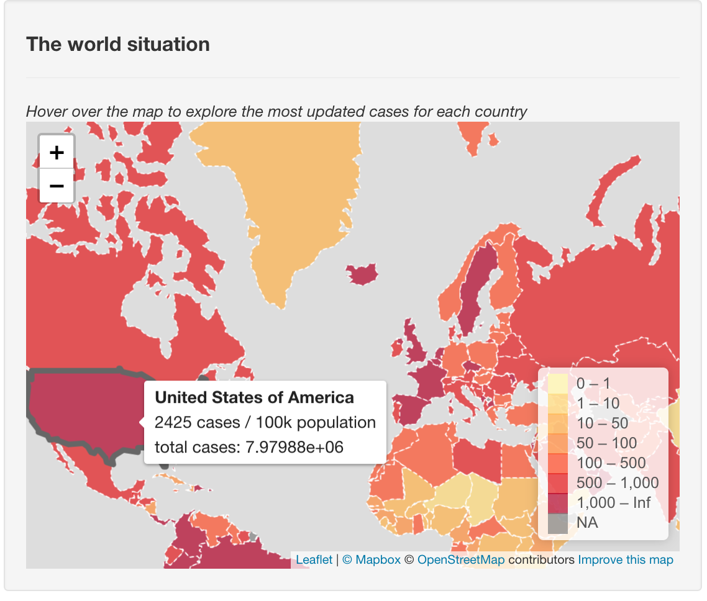
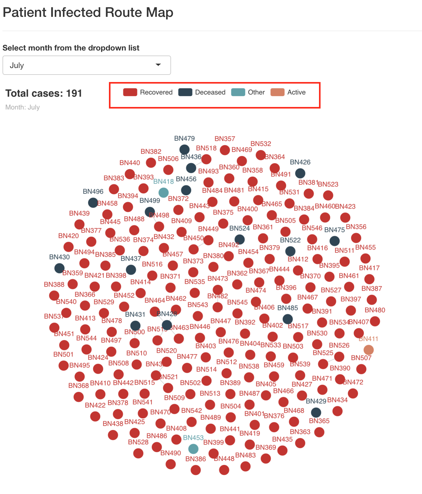

Recently i decided to put my Shiny skill to the test with a mini project that took one week to complete. Now it’s time to reflect on what i have done well and what can be improved. Hope you will find something interesting out of what i have to say!
Hello again!
It’s this time of month where i will emerge and pop out something new on this blogpost. So last week I was attempted to create something a little more complex than what i usually do. Its original purpose was for a school project, but i saw this as quite a challenge to what i was accustomed to, which used to be markdowns and some cute and ready-for-running HTML pages knitted from those markdowns. It was a shiny app with a whole lots of different syntax, having different structure and holding a handful of new definition. The topic for this Shiny app was the same old Covid-19 that people cannot seem to stop talking about these days. I might want to see if i can create something new out of the same old stuff.
The Shiny app i build this time named “The Vietnam COVID-19”. As the named implied, this app was built focusing on reporting the COVID situation in Vietnam from the time when the pandemic first out-broke in the country. I chose Vietnam simply because this is my country so i probably had a lot to tell (I tried).
The app was sectioned into four subsection, which are:




The last experience closest to Shiny i have ever done was a flexdashboard which embedded some Shiny features to make it more interactive. This is my first attempt fully building an app on Shiny.
However, most of the time used for this app was spent for the brainstorming process. I spent 4 days out of a week just to ask myself what people would actually care about when they look at a COVID bulletin board. Too much information and analysis could be both nice and distracted at the same time. I tried to stick with the basic in order not to over complicate my works but still be able to answer all the first level questions ones may have. With that in mind, i consider the story flow is the strongest point of this app. However, please do let me know if you think other bits of information should be added to further expand this “basic” patch.
Asides from the story flow which i pride myself on, i do think my app successfully projected some colour into the dull numbers. If you could take a look at the Vietnam’s MOH main COVID infor hub you would all agree that the content is somewhat lacking to attract the audience’s attention. Information was plenty but less efforts was made to bring out those bits and made the data worthwhile. I wanted to change it, so the platform will be more user-friendly and make the fullest use of the data gathered. I think i have managed to achieve a part of such goal.
Needless to say, there are tons of points that can be improved to make the app more vivid and effective. I have a lot of things i want to do with this app, but the time constraint - aka the deadline had forced me to pause a little bit. Listed down here are the points that i believed i can make better and those that i wished i could make better.

In world map, you can see that the labels are not properly formatted as the total cases number was not in a neat format. I struggled a bit at this part as i could not fix this in time to submit the app. Further formatting the labels could be done to improve the visual of this app.

I did not include a lot of explanation for this app eventhough i can assure you that the COVID story in Vietnam has more to tell. A reason for that was partly due to the constrain of time. Another reason was that i have yet to figure out how to visualise these stories nicely in a way that would involve less reading and more viewing. Also i am stuck at organizing the page structure to fit in a lot of details. That is a homework for me after all the deadline rush is over.
This bit is not about improvement for the app itself but the this blogpost. I would very much want to post the link to the Shiny app here so you can have a hand on the app and if possible, provide me with more feedbacks. However, some technical glitch happened i have yet to publish this app to this Shinyapp.io hub. It’s a shame not being able to showcase your works to a wider range of audience. I am currently looking into this problem and hope to fix it in no time.
I would probably try to, when i have some time away from all the studying and deadline.

I figured this blogpost could be a bit boring compared to others as it was more on the personal side. But i still hope that my reflection could somehow prove useful to you in some way. Again, any recommendations, advice and opinions are warmly welcomed. Thanks a lot for spending time to read this long post, much appreciated!